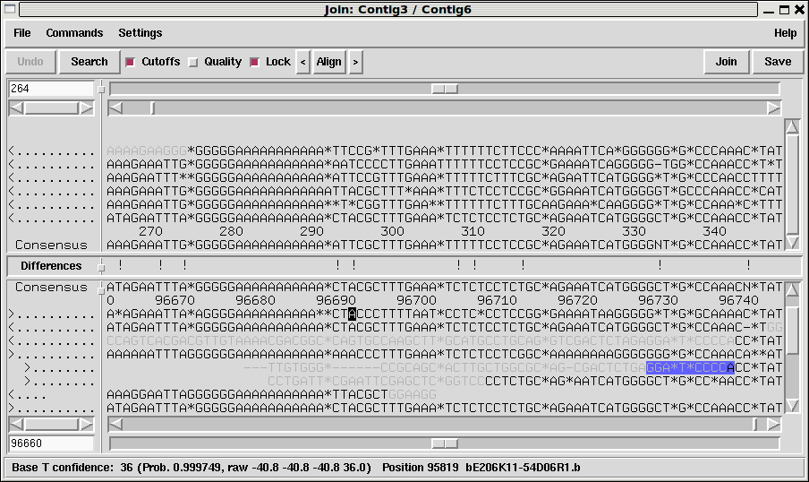

Contigs are joined interactively using the Join Editor. This is simply a pair of contig editor displays stacked above one another. The top editor is flipped in Y so that the consensus appears at the bottom. This allows the two consensus sequences to be adjacent to one another, separated only by a "differences" line. Note that it is essential to align the contigs over the full length of their overlap. It is much more difficult to achieve this after a join has been made, and until the alignment is correct, the consensus sequence will be nonsense.
The few differences between the Join Editor and the Contig Editor can be seen in the figure below. Otherwise all the commands and operations are the same as those for the Contig Editor

One difference is the Lock button. When set (as it is in the illustration) scrolling either contig will also scroll the other contig.
The Align button aligns the overlapping consensus sequences and adds pads as necessary. The alignment routine assumes that the two contigs are already in approximately the right relative position (as they are immediately after the Join Editor has been invoked from Find Internal Joins, or Find Repeats). If they are not you may get better results by manually positioning then before hand.
The "<" and ">" buttons either side of the "Align" button perform the alignment from the editing cursor to the start of the contig and and from the cursor to the end of the contig only. Alignment end-gaps are penalised at the curosr position but not for the alignment end at the contig start/end position. These buttons are useful for when multiple alignment positions may be valid, such as is the case with an overlap consisting entirely of a short tandem repeat.
It should be noted that each of the pair of editors comprising the Contig Editor maintains its own undo history, and using Align is likely to add to both undo histories. There is only one Undo button, but it applies to the editor last clicked within. A hint is given as to which of the two editors this is by highlighting the editor in a red border when the mouse is moved over the Undo button.
Pressing the Join button will display a small dialogue box informing you of the length and percentage match of the overlap between the two contigs. At this point you can decide to make the join, to not make the join (both of which remove the editors from the screen) or to cancel which leaves the join editor visible still to permit further editing.